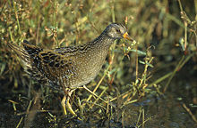
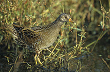

| Spotted Crake | |
|---|---|
|  | |
| Conservation status | |
| Binomial name | |
| Porzana porzana Linnaeus, 1766 |
| Spotted Crake | |
|---|---|
|  | |
| Conservation status | |
| Binomial name | |
| Porzana porzana Linnaeus, 1766 |
The Spotted Crake (Porzana porzana) is a small waterbird, of the family Rallidae.
Their breeding habitat is marshes and sedge beds across temperate Europe into western Asia. They nest in a dry location in marsh vegetation, laying 6-15 eggs. This species is migratory, wintering in Africa and Pakistan.
At 19-22.5 cm length, Spotted Crakes are slightly smaller than Water Rails, from which they are readily distinguished by the short straight bill, yellow with a red base. Adults have mainly brown upperparts and blue-grey breast, with dark barring and white spots on the flanks. They have green legs with long toes, and a short tail which is buff underneath.
Immature Spotted Crakes are similar, but the blue-grey is replaced by brown. The downy chicks are black, as with all rails.
The only confusion species is the Sora, a rare vagrant from North America. However, that species lacks the breast spotting and has an unstreaked crown stripe.
These birds probe with their bill in mud or shallow water, also picking up food by sight. They mainly eat insects and aquatic animals.
Spotted Crakes are very secretive in the breeding season, and are then mostly heard rather than seen. They are then noisy birds, with a distinctive repetitive whiplash-like hwuit, hwuit call. They can be easier to see on migration.
The Spotted is one of the species to which the Agreement on the Conservation of African-Eurasian Migratory Waterbirds (AEWA) applies.

.jpg){kind=link}